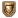
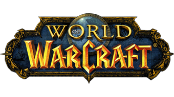

¡Bienvenidos!

World of Warcraft (abreviado como WoW, literalmente en español Mundo de Warcraft) es un videojuego de rol multijugador masivo en línea desarrollado por Blizzard Entertaiment. Es el cuarto juego lanzado establecido en el universo fantástico de Warcraft, el cual fue introducido por primera vez por Warcraft: Orcs & Humans en 1994. World of Warcraft transcurre dentro del mundo de Azeroth, cuatro años después de los sucesos finales de la anterior entrega de Warcraft, Warcraft III: The Frozen Throne. Blizzard Entertainment anunció World of Warcraft el 2 de septiembre de 2001.
World of Warcraft fue aclamado universalmente por la crítica después de ser lanzado, siendo precedido de un período de grandes expectativas antes de su publicación. Aunque el juego sigue un modelo similar a otros del género y usa conceptos de los juegos de rol, las nuevas propuestas para reducir las pausas entre encuentros fueron bien recibidas. Como por ejemplo la muerte, en algunos MMORPG previos el jugador sufría una fuerte penalización por morir, mientras que en World of Warcraft el jugador se recuperaba y comenzaba a jugar rápidamente.
El combate fue otro espacio donde se produjeron cambios, al permitir al jugador recuperarse rápido del daño sufrido podían volver rápido a la batalla. Estos cambios daban la sensación que harían al juego más accesible a jugadores ocasionales, que podrían jugar por periodos cortos de tiempo y aun así conseguir algo, mientras que a la vez se mantenía la profundidad en el juego de manera que se permitiera a los jugadores de los niveles más altos mantener el interés en el juego. El concepto de "bono por descanso" o el incremento de la velocidad con la que el jugador gana experiencia permitía a los jugadores alcanzar rápidamente el nivel de sus amigos.
Expansiones
- World of Warcraft Classic (Lanzado el 23 de noviembre de 2004)
-
 World of Warcraft: The Burning Crusade (Lanzado el 16 de enero de 2007)
World of Warcraft: The Burning Crusade (Lanzado el 16 de enero de 2007) - World of Warcraft: Wrath of the Lich King (Lanzado el 13 de noviembre de 2008)
- World of Warcraft: Cataclysm (Lanzado el 7 de diciembre de 2010)
- World of Warcraft: Mist of Pandaria (Lanzado el 25 de septiembre de 2012)
- World of Warcraft: Warlords of Draenor (Lanzado el 13 de noviembre de 2014)
- World of Warcraft: Legion (Lanzado el 30 de agosto de 2016)
- World of Warcraft: Battle for Azeroth (Lanzado el 14 de agosto de 2018)
Jugabilidad
En World of Warcraft, los jugadores controlan un avatar dentro de un mundo en una vista de tercera persona (con la opción de jugar en primera persona) explorando el entorno, combatiendo contra varios monstruos y jugadores, completando misiones e interactuando con personajes no jugables (PNJ) u otros jugadores. El completar misiones ayudará a los jugadores a poder subir de nivel y de esta forma, podrán conseguir equipamiento que les ayudará más adelante a combatir a las distintas criaturas que vayan apareciendo en su camino.
En común con muchos otros MMORPG, World of Warcraft requiere que el jugador pague una suscripción, sea comprando tarjetas de juego preseleccionado un tiempo de juego, o usando una tarjeta de crédito o débito para pagar una cuota regular.
El Mundo
El mapamundi de World of Warcraft es muy extenso, ya que cuenta (a partir de las expansiones) con CUATRO dimensiones o mundos: Azeroth, Terrallende, Draenor y Argus,que cada uno cuenta con continentes, numerosas regiones, ciudades y mazmorras que se pueden explorar. Las tierras incluidas con el juego básico son los Reinos del Este y Kalimdor. Después, con cada expansión se fue aumentando poco a poco el mapamundi añadiendo nuevas zonas a explorar, o remodelando las tierras anteriores, actualmente el juego base World of Warcraft Battlechest incluye contenido explorable hasta la expansión de Legion, incluyendo las dos tierras mencionadas anteriormente, Pandaria, Terrallende y Rasganorte.
Razas
Existen un total de trece razas jugables divididas en dos facciones, la Alianza y la Horda, siendo la decimotercera raza (Pandaren) compartida por ambos bandos. Pertenecen a la Alianza: humanos, gnomos, enanos, elfos de la noche, draenéi, huarguens y pandarens; y pertenecen a la Horda: orcos, no-muertos renegados, troles, taurens, elfos de sangre, goblins y pandarens. En la mayoría de las zonas, la Alianza y la Horda están en guerra una con la otra, aunque existen zonas neutrales como la ciudad flotante de Dalaran o la Ciudadela de Shattrath, estas zonas son conocidas como santuarios.
Clases y roles
En World of Warcraft un jugador tiene acceso a doce tipos de clases (según la expansión Legion) restringida según la raza que se seleccione. Además de la diferencia existente entre cada clase, estas pueden elegir una rama de talentos entre un total de tres (o cuatro si se selecciona druida como clase), aumentando la diferencia entre estas.
Roles
Independientemente de la clase, existen tres roles, los tanques, los sanadores y los DPS (del inglés Damage per second, daño por segundo).
-  Tanques: Tienen la mision de atraer a los enemigos y recibir el daño de estos, ya que tienen la capacidad de aguantar mucho daño y sobrevivir más que las otras clases. Son heroés con muchos atributos defensivos (bloquear, esquivar, parar), muchos puntos de vida y armadura para reducir al máximo el daño que reciben. El juego usa un sistema para medir el foco de ataque de los enemigos llamado amenaza. Los tanques son los que más puntos de amenaza suelen obtener durante el combate y, por ende, reciben todo el daño, sin embargo, poseen una capacidad ofensiva muy reducida.
- Sanadores: También llamados healers (del inglés heal, sanar). Se encargan de curar y mantener vivos a todos los jugadores del grupo, en especial al tanque. Su poder ofensivo suele ser muy limitado. El tipo de armadura suele ser diverso, ya que los sacerdotes usan telas, los druidas cuero, los chamanes mallas y los paladines placas. Las estadísticas primarias de este rol suelen ser el Intelecto y el Espíritu.
- DPS: sigla de daño por segundo. Se encargan de golpear al enemigo y bajarle la vida hasta derrotarlo. Son el tipo más diverso y hay de muchos tipos, a distancia, cuerpo a cuerpo y mágicos o los lanzadores o casters. Sus puntos de vida suelen ser la mitad que la de los tanques, pero el daño que infligen es superior con respecto a los otros roles y prácticamente son estos los que acaban con los jefes de las bandas. Por esa misma razón, son el tipo de rol que se necesita en mayor cantidad en las bandas. Su atributo principal suele ser la Fuerza, la Agilidad o el Intelecto.
Clases
- Guerrero
Es la clase más conocida en el juego, es especialista en el combate cuerpo a cuerpo. Según sus talentos puede desempeñarse como Tanques (Protección) o DPS (Armas [más para JcJ] o Furia [especializado en JcE]). Utilizan armaduras de placas y todo tipo de armas exceptuando las varitas y bastones. Utilizan la Ira como recurso para usar sus habilidades, esta aumenta cuando el guerrero está en combate pero desaparece rápidamente al salir de este.
- Sacerdote
Su utilidad radica en su capacidad de ser Heal (Disciplina o Sagrado) o DPS (Sombras), dependiendo de la rama de talentos que tome el jugador, aunque preferentemente esta diseñado para la sanación. Usan la armadura de tela, por lo que no son buenos en el combate cuerpo a cuerpo. Emplean el conocido sistema de maná para usar sus facultades, este disminuye a medida que las utilizan, pero se regenera periódicamente y a diferencia de la Ira, solo está limitada por el equipamiento del personaje.
- Paladín
Es una clase híbrida del juego, se puede definir como un protector que lucha y sana con el poder de la Luz, pero más enfocado al combate. Posee facultades para la lucha cuerpo a cuerpo y algunas para el apoyo a otros jugadores y de sanación, además de poseer un sistema de sellos que proporciona ventajas en la lucha a él mismo. A pesar de que son expertos en la supervivencia, sus ramas de talentos los hacen muy versátiles, al extremo de poder desempeñarse como Tanque (Protección), Healers (Sagrado) o DPS(Reprensión), y una amplia cantidad de armas. Emplean el sistema de maná, combinado con el poder sagrado, que es un tipo de energía que se carga al realizar ciertos ataques, y que sirve para activar otros ataques más poderosos.
- Mago
Emplea el sistema de maná y aunque algunos de sus ataques causan gran daño instantáneo, prefieren silenciar a sus enemigos. Son especialistas en el control de multitudes y escape debido a sus múltiples hechizos de efecto de área y hechizos que sirven para evitar luchar con varios enemigos a la vez. Son un verdadero incordio para los melees en JcJ ya que pueden teletransportarse, y ralentizar al contrincante, también pueden llegar a rellenar casi por completo su mana utilizando Evocación, aunque sin duda esta clase es famosa por la Polimorfia, habilidad que convierte en oveja.Hacen gran DPS quemando a sus enemigos (Fuego), menos DPS pero mas supervivencia y control con el hielo (Escarcha) o ataques devastadores pero caros en mana (Arcano). Además tienen la habilidad de abrir portales hacia las ciudades principales de su facción para teleportar otros jugadores hacia ellas, y también teleportarse ellos mismos. Son la única clase del juego que puede crear sus propios alimentos usando mana.
- Chamán
Es también una conocida clase Híbrida del juego, pero más enfocada a la magia, es una clase que utiliza el poder de los elementos de la naturaleza. Emplea el maná, usan armaduras de cota de malla y tiene la particularidad de crear tótems y escudos para ayudarlo en la batalla tanto para dañar a sus enemigos como para ayudar a sus amigos. Según su rama de talentos pueden ser buenos DPS a distancia (Elemental) o en cuerpo a cuerpo (Mejora). También puede desempeñarse como sanador (Restauración), con la particular de que puede sanar a varios amigos a la vez con cadenas de sanaciones. Es un personaje bastante completo.
- Brujo
Es una clase especializada en las artes de la magia vil, tienen un buen DPS a distancia, especializado en el daño progresivo DoT (Damage over Time) mediante maldiciones de la rama de las sombras a sus enemigos (Aflicción), en daño instantáneo (Destrucción) y la especialidad de manejo de demonios (Demonología) . Emplean el maná y tiene la capacidad de invocar espíritus malignos y demonios para que le ayuden en su lucha. Usan las armaduras de tela y son malos contrincantes cuerpo a cuerpo.
- Pícaro
Son asesinos, se especializan en utilizar una gran variedad de armas con las dos manos, aunque el arma icónica de esta clase es la daga. Es una clase clave tanto para el PVE como el PVP por su capacidad de inutilizar a sus contrincantes , cualquiera de sus tres ramas de talentos (Asesinato, Sutileza y Forajido) es compatible para las dos cosas depende de los gustos del jugador. Su rol se basa en énfasis en el sigilo, los venenos y el control. Usa energía como recurso.
- Druida
Tienen la cualidad de transformarse en distintas formas animales (Guardián) para tanquear en forma de oso, para hacer daño cuerpo a cuerpo en forma de temible felino (Feral), daño a distancia (Equilibrio) en forma de lechúcico lunar o forma de árbol de vida para curar (Sanación). Además de estas formas, tienen tres formas animales denominadas de viaje, una de guepardo/reno para viajar por tierra, otra de león marino/orca para viajar bajo el agua, y otra de cuervo para volar. Pueden cumplir los tres roles; tanque, sanador y DPS (cuerpo a cuerpo o a distancia) según la rama de talentos. Es la única clase capaz de desarrollar todos los roles del juego: Sanador, Tanque, DPS distancia y DPS cuerpo a cuerpo.
- Cazador
Especialista en ataque con armas a distancia que tiene la capacidad de domar animales y bestias exóticas para acompañarle y ayudar en combate. Poseen tres especializaciones en la rama de talentos: Puntería (daño con armas a distancia), Bestias (más daño con mascotas), o Supervivencia(énfasis en trampas y defensa a corta distancia). Pueden usar solo ballestas, arcos, armas de fuego y armas de asta(Supervivencia). Utilizan armaduras de malla. Generalmente, determinándose por sus propios talentos, hay tres tipos de mascotas, las del tipo Ferocidad, que hacen bastante daño pero no tienen mucho aguante, las del tipo Astucia, que son versátiles, aguantan tanto como atacan y tienen un buen control de masas y por último las del tipo Tenacidad, que aguantan mucho, pero no realizan demasiado daño, generalmente se usa este último tipo como tanques personales para el Cazador.
- Caballero de la Muerte
Se le conoce por sus siglas DK (Death Knight). Fue incorporado en la expansión Wrath of the Lich King, y ha sido definido por Blizzard como la primera clase heroica (empieza en nivel 55). Para poder crear un Caballero de la Muerte se necesita tener en la cuenta otro personaje de nivel 55 o más, recientemente eliminaron la prohibición de uno por servidor. El DK es una mezcla de tácticas cuerpo a cuerpo como el uso de ataques mágicos a distancia y el uso de enfermedades de daño periódico. Emplea el sistema de runas para poder usar sus facultades. Dichas runas (sangre, escarcha, y profano, dos de cada tipo) tienen un tiempo de recarga después de haber sido utilizadas, lo que limita la frecuencia de uso de habilidades. El Caballero de la Muerte tiene como ramas de talentos Sangre (énfasis en daño directo, regeneración de vida y uso de armas de dos manos), Escarcha (uso de la doble empuñadura además de ataques rápidos de daño de escarcha), y Profano (mejora de las enfermedades y en el uso de esbirros no muertos); y es capaz de desempeñar dos roles: tanque, y DPS cuerpo a cuerpo, en un principio el DK podía usar cualquier rama de talentos para desempeñar el papel de tanque dependiendo de como se construyera la rama y en los gustos del jugador. Los DKs comienzan con un atuendo único predefinido.
- Monje
Los monjes, incorporados en la expansión Mists of Pandaria son los maestros de las artes marciales, usando la fuerza interior y la poderosa energía "chi" como recurso y solo empuñan las armas de puño o bastones para sus letales golpes de gracia (Viajero del Viento). Los monjes sanadores aportan armonía y equilibrio a todos los grupos y pueden sanar hasta las heridas más graves con remedios antiguos y artes espirituales (Tejedor de la Niebla). Son pocos los que pueden confiar en sobrevivir ante la extrema destreza del monje maestro cervecero, cuyas intensas bebidas e impredecible estilo de combate absorben unas cantidades de daño impresionantes (Maestro Cervecero)..
- Cazador de Demonios
Incorporados en la penúltima expansión de , Los cazadores de demonios, discípulos de Illidan Tempestira, cargan con un oscuro legado que atemoriza a aliados y enemigos por igual. Los Illidari se sirven de magia vil y magia caótica, energías que durante eones han amenazado Azeroth y que, según ellos, son esenciales para hacer frente a la Legión Ardiente. Con los poderes de los demonios a los que han asesinado, los Illidari desarrollan rasgos demoníacos que provocan repulsión y pavor entre sus congéneres, los elfos.
Los cazadores de demonios usan armaduras de cuero, sacrificando protección para ganar velocidad, lo que les permite recortar distancias rápidamente y mutilar a sus enemigos con armas de una mano. No obstante, los Illidari también deben aprovechar su agilidad en aras de la defensa para asegurar la victoria, sus roles son: DPS y Tanque.
Historia de Warcraft
¡Por la Horda, la Alianza y Por Azeroth!
La Historia de Warcraft, también conocido como el Universo Warcraft, es el lore creado por Blizzard Entertaiment. El lore comprende la historia de los acontecimientos en el Universo Warcraft, la creación del universo, el panteón de los titanes, la conquista de mundos de la Legion Ardiente, el mundo de Azeroth, la pelea sin fin de la Alianza contra la Horda, etc.
Desde hace tiempo Blizzard ha puesto en marcha una política de diversificación de fuentes por lo que muchas de las partes de la historia que no se explican en los videojuegos de World of Warcraft lo acaban siendo en novelas y cómics que no siempre están disponibles en español. Esto hace que exista entre mucha gente un gran desconocimiento de algunos aspectos importantes básicos de la historia que no pueden acceder a las fuentes oficiales porque no existen en su idioma y tengan que recurrir a traducciones amateurs que no siempre son las más acertadas. Internet está lleno de historias desordenadas de la historia de Warcraft sin ningún tipo de fuente de referencia totalmente desactualizadas y fuera del contexto actual de los acontecimientos por lo que se hace necesario un lugar donde se aúne toda la información posible. Aquí se muestra un resumen bastante fiel de todo el material oficial publicado por Blizzard y sus referencias individuales.
Capitulos:
Capítulo I: Mythos
- Los titanes y la formación del universo
- Sargeras y la traición
- Los dioses antiguos y el orden de Azeroth
- Encomienda a los Vuelos
- El despertar del mundo y el Pozo de la Eternidad
- La guerra de los Ancestros
- El Diluvio del mundo
- El Monte Hyjal y el obsequio de Illidan
- El Árbol del mundo y el Sueño Esmeralda
- El exilio de los elfos nobles
- Las Centinelas y la gran vigilia
Criticas, Premios y Puntuaciones

Hasta el dia de hoy World of Warcraft continúa siendo con diferencia el juego en línea por suscripción con el mayor registro de usuarios, manteniento el récord Guinness para el MMORPG (Massive Multiplayer Rol Playing Game) más popular.
World of Warcraft ganó varios premios tras su lanzamiento, incluyendo Selecciones de Editores (Editor's Choice awards). Además, ganó varios premios anuales de medios, siendo descrito como el mejor videojuego de rol y MMORPG. Los gráficos y el sonido también recibieron mención en los premios anuales, sobre todo el estilo de dibujos animados y el sonido en general. El juego recibió el premio al mejor producto de entretenimiento para Mac OS X en los premios Apple Design en 2005.
Finalmente, World of Warcraft fue reconocido en los premios Spike TV de 2005 como el mejor juego de PC, mejor juego multijugador, mejor RPG y el juego más adictivo. En 2008, World of Warcraft fue honrado en la quincuagésimo novena edición de los premios Emmy de la tecnología e ingeniería por su avance en juegos MMORPG.
Reconocimientos
- Mejor Juego del Año - GameSpot
- Mejor Juego del Año para PC - GameSpot
- Mejor Juego MMO - GameSpot
- Elección del Editor - GameSpot
- Mejor Juego de Rol (RPG/MMORPG) - GameSpy
- Logro Especial en Dirección Artística - GameSpy
- Elección del Editor - GameSpy
- Elección de los Jugadores (RPG/MMORPG para PC) - GameSpy
- Mejor Juego con Mundo Persistente - IGN
- Elección del Editor - IGN
- Mejor Juego de Rol para PC - FileFront
- Mejor Juego MMO - VoodooExtreme
- Mejor Juego del Evento (E3 2003) - The Wargamer
- Mejor Universo Persistente Online (E3 2003) - IGN PC
- Finalista de la categoría de Mejores Gráficos (E3 2003) - IGN Vault